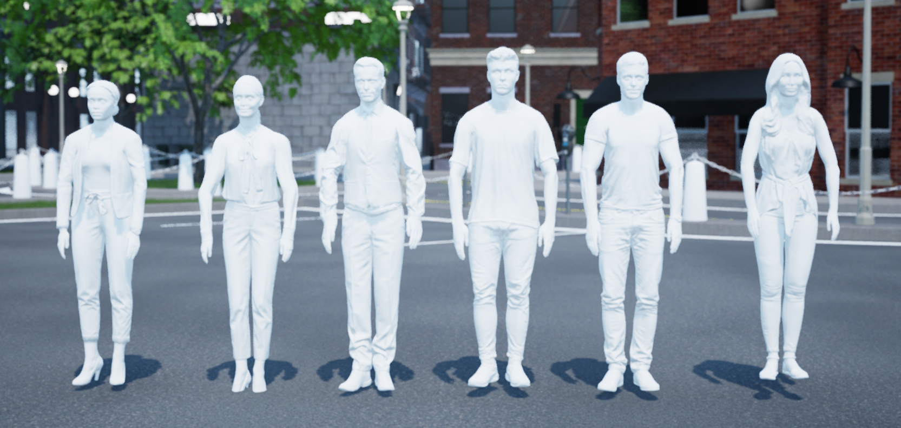

People
Description
People are considered “actors” in the Virtual Self-Driving Car Studio. The person library controls the people placed in the Virtual Self-Driving Car Studio workspaces of the Quanser Interactive Labs.
People actors can be spawned anywhere in the Open Worlds, but to use the move_to methods to allow the people to self-navigate around the environment, they must originate and travel to a connected valid nav area.
For the best visual animation, it is recommended that you use the speed constants defining different gait styles. A character will accurately travel at any specified speed up to 6m/s, but the visual animation may give the impression of “slipping” at certain speeds outside the recommended values.
See the tutorial to get a better understanding of using cameras in the Quanser Interactive Labs.
Library
Constants
- QLabsPerson.ID_PERSON = 10030
- QLabsPerson.STANDING = 0
Speed constant for the move_to method.
- QLabsPerson.WALK = 1.2
Speed constant for the move_to method.
- QLabsPerson.JOG = 3.6
Speed constant for the move_to method.
- QLabsPerson.RUN = 6.0
Speed constant for the move_to method.
Methods
- QLabsPerson.spawn(qlabs, actorNumber, location, rotation, scale, configuration=0, waitForConfirmation=True)[source]
Spawns a person in an instance of QLabs at a specific location and rotation using radians.
- Parameters
qlabs (QuanserInteractiveLabs object) – A QuanserInteractiveLabs object
actorNumber (uint32) – User defined unique identifier for the class actor in QLabs
location (float array[3]) – An array of floats for x, y and z coordinates in full-scale units. Multiply physical QCar locations by 10 to get full scale locations.
rotation (float array[3]) – An array of floats for the roll, pitch, and yaw in radians
scale (float array[3]) – An array of floats for the x, y, and z scale
configuration (int32) – (Optional) Select the style of person to be spawned. See the Configuration section for more details.
waitForConfirmation (boolean) – (Optional) Wait for confirmation of the spawn before proceeding. This makes the method a blocking operation.
- Returns
0 if successful, 1 class not available, 2 actor number not available or already in use, 3 unknown error, -1 communications error
- Return type
int32
Tip
The origin of the person is in the center of the body so by default, it will be spawned 1m above the surface of the target. An additional vertical offset may be required if the surface is sloped to prevent the actor from falling through the world ground surface.
Tip
If you would like to use the move_to method, the actor must be spawned in a valid nav area.
- QLabsPerson.spawn_degrees(qlabs, actorNumber, location, rotation, scale, configuration=0, waitForConfirmation=True)[source]
Spawns a person in an instance of QLabs at a specific location and rotation using degrees.
- Parameters
qlabs (QuanserInteractiveLabs object) – A QuanserInteractiveLabs object
actorNumber (uint32) – User defined unique identifier for the class actor in QLabs
location (float array[3]) – An array of floats for x, y and z coordinates in full-scale units. Multiply physical QCar locations by 10 to get full scale locations.
rotation (float array[3]) – An array of floats for the roll, pitch, and yaw in degrees
scale (float array[3]) – An array of floats for the x, y, and z scale
configuration (int32) – (Optional) Select the style of person to be spawned. See the Configuration section for more details.
waitForConfirmation (boolean) – (Optional) Wait for confirmation of the spawn before proceeding. This makes the method a blocking operation.
- Returns
0 if successful, 1 class not available, 2 actor number not available or already in use, 3 unknown error, -1 communications error
- Return type
int32
Tip
The origin of the person is in the center of the body so by default, it will be spawned 1m above the surface of the target. An additional vertical offset may be required if the surface is sloped to prevent the actor from falling through the world ground surface.
Tip
If you would like to use the move_to method, the actor must be spawned in a valid nav area.
- QLabsPerson.move_to(qlabs, actorNumber, location, speed, waitForConfirmation=True)[source]
Spawns a person in an instance of QLabs at a specific location and rotation using degrees.
- Parameters
qlabs (QuanserInteractiveLabs object) – A QuanserInteractiveLabs object
actorNumber (uint32) – User defined unique identifier for the class actor in QLabs
location (float array[3]) – A target destination as an array of floats for x, y and z coordinates in full-scale units.
speed (float) – The speed at which the person should walk to the destination (refer to the constants for recommended speeds)
waitForConfirmation (boolean) – (Optional) Wait for confirmation before proceeding. This makes the method a blocking operation, but only until the command is received. The time for the actor to traverse to the destination is always non-blocking.
- Returns
True if successful, False otherwise
- Return type
boolean
Tip
Ensure the start and end locations are in valid nav areas so the actor can find a path to the destination.
- QLabsPerson.destroy(qlabs, actorNumber)[source]
Destroys a person in an instance of QLabs.
- Parameters
qlabs (QuanserInteractiveLabs object) – A QuanserInteractiveLabs object
actorNumber (uint32) – User defined unique identifier for the class actor in QLabs
- Returns
The number of actors destroyed. -1 if failed.
- Return type
int32
- QLabsPerson.ping(qlabs, actorNumber)[source]
Checks if a person of the corresponding actor number exists in the QLabs environment.
- Parameters
qlabs (QuanserInteractiveLabs object) – A QuanserInteractiveLabs object
actorNumber (uint32) – User defined unique identifier for the class actor in QLabs
- Returns
True if actor is present, False otherwise
- Return type
boolean
- QLabsPerson.get_world_transform(qlabs, actorNumber)[source]
Get the location, rotation, and scale in world coordinates of the person
- Parameters
qlabs (QuanserInteractiveLabs object) – A QuanserInteractiveLabs object.
actorNumber (uint32) – User defined unique identifier for the class actor in QLabs
- Returns
success, location, rotation in radians
- Return type
boolean, float array[3], float array[3]
- QLabsPerson.get_world_transform_degrees(qlabs, actorNumber)[source]
Get the location, rotation, and scale in world coordinates of the person
- Parameters
qlabs (QuanserInteractiveLabs object) – A QuanserInteractiveLabs object.
actorNumber (uint32) – User defined unique identifier for the class actor in QLabs
- Returns
success, location, rotation in degrees
- Return type
boolean, float array[3], float array[3]
Configurations
There are 6 configurations (0-5) for a person generated in QLabs.
Connection Points
Tutorial
Example 1
Example 2
Example 3
See Also:
QLabsPerson().spawn(qlabs, deviceNumber, location, rotation, scale, configuration=0, waitForConfirmation=True)
QLabsPerson().spawn_degrees(qlabs, deviceNumber, location, rotation, scale, configuration=0, waitForConfirmation=True)
QLabsPerson().move_to(qlabs, deviceNumber, location, speed, waitForConfirmation=True)